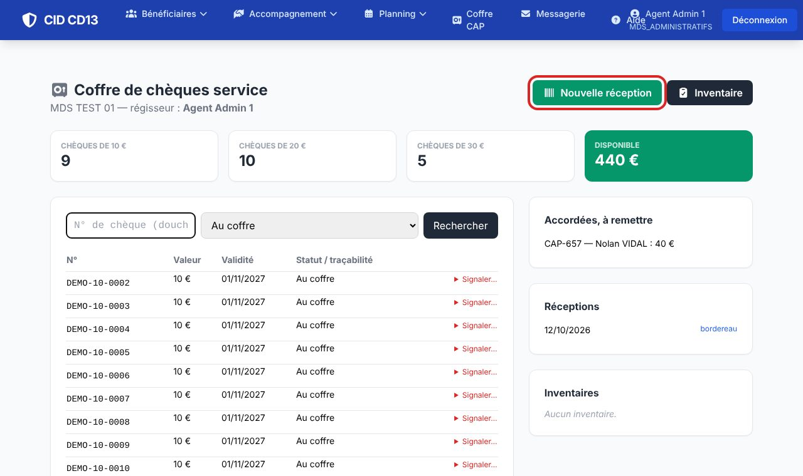
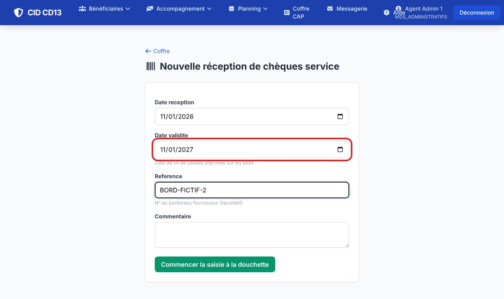
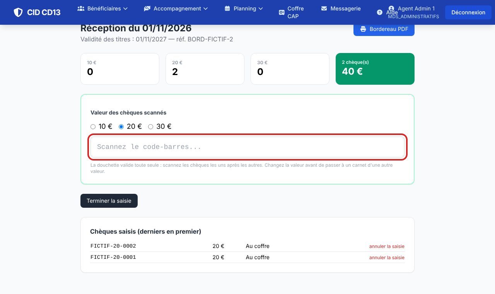
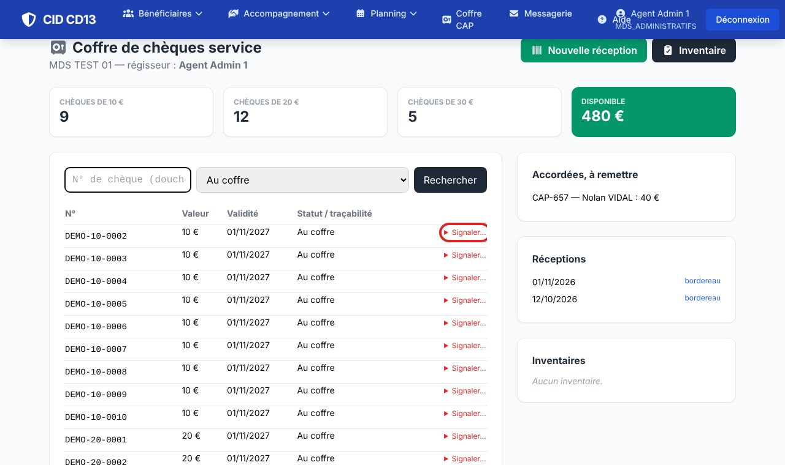
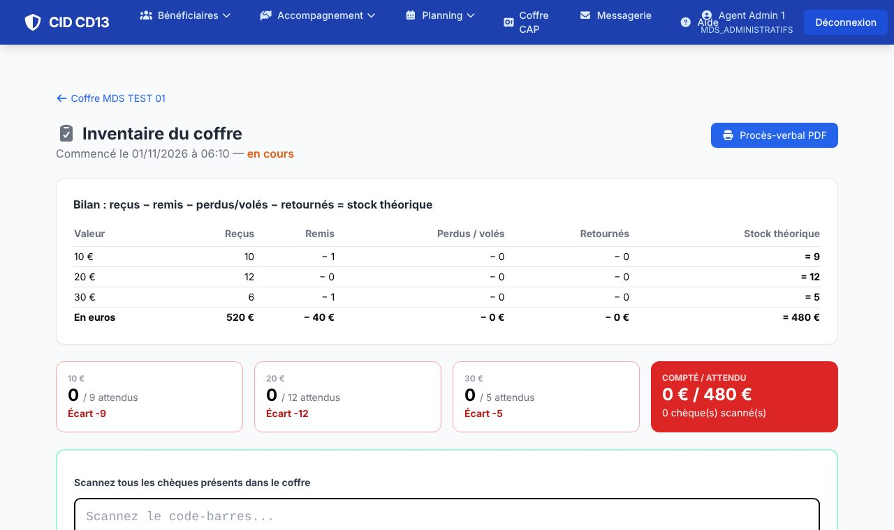

1Le coffre

- Menu Coffre CAP : le nombre de chèques par valeur et le montant disponible, la liste des chèques avec leur statut, les CAP accordées à remettre, les réceptions et les inventaires.
- Recherchez un chèque par son numéro ou filtrez par statut (au coffre, remis, perdu, volé, retourné).
2Enregistrer une réception


- Cliquez sur Nouvelle réception : date de réception, date de fin de validité imprimée sur les titres, n° du bordereau.
- Commencer la saisie à la douchette : choisissez la valeur (10, 20 ou 30 €), puis scannez chaque chèque ; la liste et le total se mettent à jour.
- Cliquez sur Terminer la saisie : plus aucun chèque ne pourra être ajouté à cette réception. Le bordereau est disponible en PDF.
3Signaler un incident

- Sur la ligne du chèque, Signaler… : perdu, volé, ou retourné (périmé, annulé), avec un commentaire.
4Faire l'inventaire

- Cliquez sur Inventaire, puis scannez tous les chèques présents dans le coffre.
- CID compare au stock théorique (reçus − remis − perdus/volés − retournés) et affiche les écarts par valeur.
- Terminer l'inventaire : le procès-verbal est disponible en PDF.
Bon à savoir
- Le régisseur est désigné sur la page du coffre (« Régisseur (délégation de la direction) »).
Cliquez sur une image pour l'agrandir. Le cadre rouge montre où cliquer ou quoi remplir. Toutes les données affichées sont fictives.